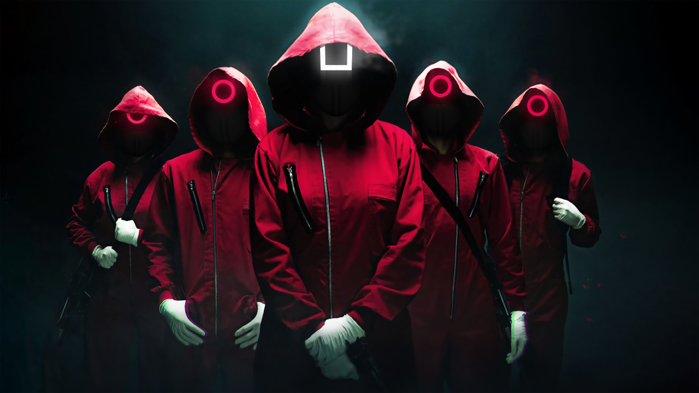
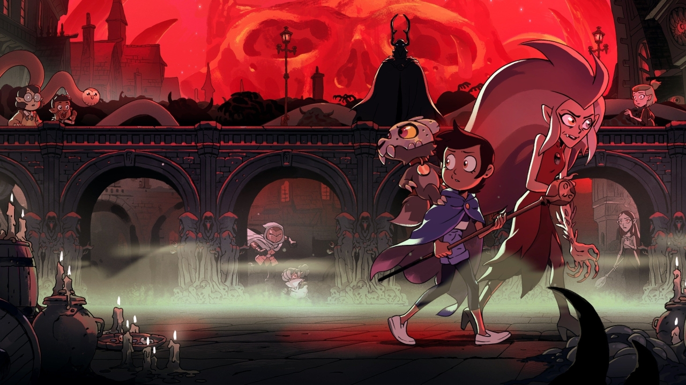

Round 6
Fenômeno da Netflix, ‘Round 6’ (‘Squid Game’) se tornou oficialmente a série mais vista da história da plataforma. Com isso, a série tirou o título de ‘Bridgerton’ (trailer oficial), que foi assistida por 82 milhões de contas nos primeiros 28 dias no ar. Isso não só tem um grande impacto do tiktok, onde a série gerou várias tendencias, mas também das outras redes sociais que acabaram por terem muito público durante a pandemia.
Desenhos animados
Enquanto Hollywood tenta administrar atrasos de produção causados pelo coronavírus, animações emergem como uma fonte de programação à prova de pandemia. Como o trabalho pode ser feito remotamente, os estúdios de animação evitam os complexos problemas de segurança que as séries de ação ao vivo criam para produtores: administrar um grande elenco e equipe no set, minimizando o risco de exposição.
MC Fioti - Vacina Butantan
O clipe conta a história do MC que tinha pendente com o gênio da lâmpada 2 desejos. Em uma nova oportunidade, Fioti pede “a cura do coronavírus” e, como terceiro e último desejo, “quero que traga paz, amor e saúde para a humanidade”. O gênio então concede os desejos e o jovem acorda na escadaria do Instituto – um dos maiores centros de pesquisa do Brasil, reconhecido mundialmente
Marília Mendonça tem a live mais vista da história do YouTube
A segunda live de Marília Mendonça, a “Todos os Cantos De Casa”, transmitida em 9 de maio, figura na oitava posição do ranking, com 2,21 milhões de visualizações. Os números correspondem ao pico de visualizações, ou seja, o número de dispositivos conectados na transmissão ao mesmo tempo.
Leia Mais